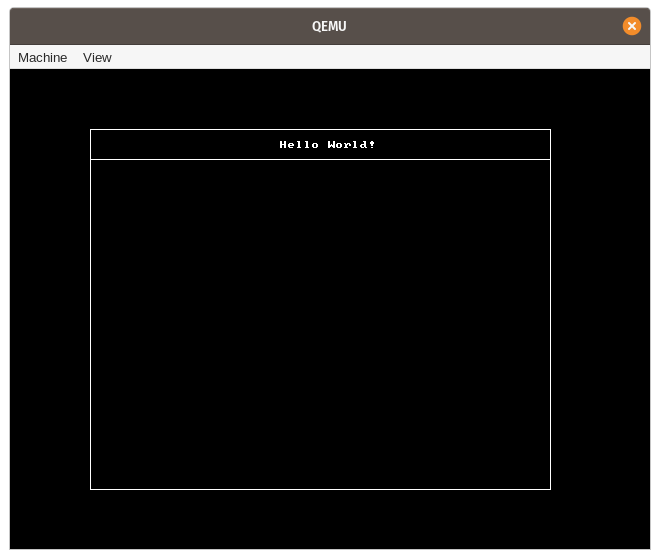

Updates in March 2020
This post gives an overview of the recent updates to the Writing an OS in Rust blog and the corresponding libraries and tools.
I focused my time this month on finishing the long-planned post about Async/Await. In addition to that, there were a few updates to the crates behind the scenes, including some great contributions and a new vga crate.
As mentioned in the Async/Await post, I’m currently looking for job in Karlsruhe (Germany) or remote, so please let me know if you’re interested.
blog_os
The repository of the Writing an OS in Rust blog received the following updates:
- Update linked_list_allocator to v0.8.0
- Update x86_64 dependency to version 0.9.6
- New post about Async/Await
- Discuss the approach of storing offsets for self-referential structs
- Use a static counter for assigning task IDs
In addition to the changes above, there were a lot of typo fixes by external contributors. Thanks a lot!
x86_64
The x86_64 crate provides support for CPU-specific instructions, registers, and data structures of the x86_64 architecture. In March, there was only a single addition, which was required for the Async/Await post:
- Add an enable_interrupts_and_hlt function that executes
sti; hlt(released as v0.9.6)
bootloader
The bootloader crate received two contributions this month:
- Implement boot-info-address by @Darksecond (released as v0.8.9)
- Identity-map complete vga region (0xa0000 to 0xc0000) by @RKennedy9064 (released as v0.9.0)
bootimage
The bootimage tool builds the bootloader and creates a bootable disk image from a kernel. It received a RUSTFLAGS-related bugfix:
vga
There is a new crate under the rust-osdev organization: vga created by @RKennedy9064. The purpose of the library is to provide abstractions for the VGA hardware. For example, the crate allows to switch the VGA hardware to graphics mode, which makes it possible to draw on a pixel-based framebuffer:

For more information about the crate, check out its API documentation and the GitHub repository.